Intro
Industrial WordPress Theme
- Features: WordPress, HTML5, CSS3, Multi-purpose, Revolution slider, Custom colors
- Type: WordPress Theme
- Created: 13/04/2016
- By: AnpsThemes
- Latest Version: 1.0
- Support: anpsthemes.freshdesk.com
Hello! First of all we would like to thank you for purchasing our theme! :) If you have any questions that are beyond the scope of this help file, please feel free to send your question on anpsthemes.freshdesk.com
This file will teach you how to set up and use our theme.
This file is really extensive so you might think the theme is hard to use, actually it's not, you probably just might jump in the code and explore everything yourself, this file is more of a reference work if you do not know what to do.
Have fun using our theme!
Best regards,
AnpsThemesJump start
If you want to set the theme up and running as quickly as possible, please follow this check list:
- Create a fresh installation of wordpress
- Upload the theme through WP dashboard in Appearance -> themes -> Add New -> Upload Theme
- When you activate the theme, a notice will appear to install required plugins. Install them.
- After plugins are installed, visit Theme options -> Dummy Content and install your prefered demo.
- Demo install might take few minutes, after it is done, just edit the pages, add your content and replace placeholders with your own images.
After you've imported the demo content, you can adjust and alter all elements to your liking, by- Editing Theme Options settings
- using Visual Composer
- setting page specific options in Wordpress dashboard
Page Elements
Theme Options Page Elements
First lets introduce elements that are available to you throughout the site.
- Top Bar: Top Bar consists of brief but important company data such as telephone number, social links, email and opening hours. You can:
- Customize background color, text color inside Theme options -> Color management
- Enable or disable Top Bar inside Theme options -> Header options
- Logo: Logo is your brand indetity. It should be clearly visible on all pages.
Our theme supports multiple Logos. In theme options -> Logos & Media you can upload General logo, Front page logo, Sticky logo and Mobile logo. You can also set the height of logos here. On each page separatly this options can be overridden if needed.
- Main Menu: is the main navigation. You can:
- Change font type inside Theme options -> Typography.
- Change text color inside Theme options -> Header options.
- Change header types in Theme options -> Header options.
- Center the menu inside Theme options -> Header options.
- Enable sticky menu inside Theme options -> Header options.
- Disable/enable search icon on desktop/mobile inside Theme options -> Header options.
- Page Heading: Page Heading can be turned on and off in Theme options -> page layout. This options can also be overriden on each page separatly.
- Change the font size inside Theme options -> Typography.
- Disable page title, breadcrumbs and background inside Theme options -> Page Layout.
- Disable only breadcrumbs inside Theme options -> Page Layout.
- Choose default Page Heading background inside Theme options -> header options.
- Content:
- Read about Adding Blog Posts inside Adding Blog Posts
- Read about Adding Portfolio Posts inside Adding Portfolio Posts
- Read about Visual Composer Elements inside Visual Composer
- Footer: Footer is meant for displaying additional but important information, such as sitemap, contact forms, company information, navigation, recent posts, social links etc. You can:
- Change background and text color inside Theme options -> Color management.
- Specify mobile layout of footer inside Theme options -> Page Layout.
- Disable footer inside Theme options -> Footer options .
- Change footer style inside Theme options -> Footer options.
- Add footer content (widgets) inside Appearance -> widgets.
- Copyright Footer:
- Change background color inside Theme options -> Color Management.
Theme Options
Inside Theme Options you can change almost everything. From font styles to page layout. Easily change or adjust font-sizes, colors, breadcrumbs, mobile layout, menu and footer.
Go to Theme options by clicking on Theme Options under Appearance → Theme Options.
You can also access Theme Options by hovering or clicking on the Theme Options inside the WP Admin Bar on the top of your screen.
Color management
Color management is accessed by clicking Theme options -> Color Management
Predefined Color Scheme
When you choose a color scheme, it will only fill in the options below, so you can still change each colors seperatly, without editing the predefined colors.
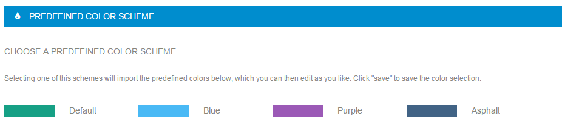
Setting the colors
For fine control over colors, you can modify almost each color used in the theme seperatly. Some color option change more than one element on the page at the same page, like primary color or hovers color.You can set colors by typing in the HEX values or by clicking on the colored box, which will open interactive colorpicker.
Text Color will change the color of the raw content text.
Primary Color change the color of icons, tabs upper border, text of visited page in breadcrumbs, username in comments.
Hovers Color applies to all hover states.
Menu Text Color applies to the text in the menu (navigation)
Headings Color applies to heading across the site. It also applies for the headings in Sidebar and previous pages in breadcrumbs.
Top Bar Text Color applies to the text in the Top Bar. Top Bar is above the logo and navigation.
Top Bar Background Color changes the background color of the Top Bar section.
Footer Background Color changes the background color of the footer.
Copyright Footer Background Color changes the background color of the copyright section which is a bit below the footer.
Footer Text Color changes the text in the Footer section.
Footer Heading Text Color changes headings text color.
Copyright Footer Text Color changes text color in copyright section.
Page Header Background Color changes the background color of the Page Header section. Page Header is located below the Header and above the Content.
Submenu Background Color changes the background color of a dropdown submenu in navigation.
Submenu Text Color changes the text color of a dropdown submenu in navigation.
Submenu divider color changes the color of submenu divider.
Text on top of primary color changes color of text where primary color is used as background (ie calendar title, mini cart in header,...)
Shopping cart item number background color changes background color of items number in mini cart.
Shoping cart item number text color changes color of items number in mini cart.
Typography
Font family
Specify three font types:
- Font type 1: used for headings (we used Montserrat on our demo site, which is a font that is included inside the fonts folder)
- Font type 2: used as the main body font (we used PT Sans on our demo site)
- Navigation font type used in main navigation (we used Montserrat on our demo site)
Below the Font Family you can also specify the subsets of character encoding for that specific font family. Character subsets varies from font to font (i.e. PT Sans supports Latin, Latin-ext, Cyrillic and Cyrillic-ext meanwhile Montserrat only supports latin).
Character subset will automatically refresh when you select a different font family.If you chose a Font, but it doesn't show some of the characters as it should chances are that this font family doesn't support the desired character subset and you should find one that does.
Since many of our fonts are included from Google Fonts, you can easily search for your perfect font by filtering the results based on the desired character subset on Google Fonts website.
When selecting a font family you will be able to choose a font from three groups:
- System Fonts: here you can find all of the basic fonts, from Times New Roman to Comic Sans.
- Custom Fonts: here you will find all of the fonts you upload to the theme. See Upload Custom Fonts section for more details.
- Google Fonts: Our theme supports 600+ google fonts, so you have the freedom to choose whatever font you would like, but be aware that our theme uses certain font weights that may not work good with certain font families. Note that Google keeps adding new fonts, so see Update Google Fonts section for more information.
Font sizes
For fine control over theme's typography, it is possible to adjust used font sizes for:
- Body Font Size: All the content inside body except headings, it will change also the content in the footer and top menu (14px is default)
- Menu Font Size: Will modify main menu (navigation) font-size.
- Content Headings (from h1 to h5): With these you can modify headings (ranging from h1 to h5)
- Page Heading: This will change font-size in page heading areas on pages
- Single blog page heading 1 font size This will change font-size on single blog post heading
Adjust the font-size to your desires by entering new value in the input. After that click Save Changes button at the bottom of the Theme Options panel.
Update Google Fonts
At the initial theme installation no fonts will be added so you will need to import them by pressing Update Google Fonts in this section. Note that the process might take a while, as there are quite a lot of font families that need to be imported.
If in the future you will see a new Google Font and would like to use it on your site, then import the fonts again by pressing Update Google fonts.
Custom Fonts
This section allows you to add new font families. The fonts can be easily added by selecting a .zip file (you need to provide more than just one font file type, so that all browser will be able to use you font) and pressing Save all changes.
Custom CSS
This section is intended for front end developers. Custom CSS section enables you to customize your site beyond theme options. Learning CSS is easy as it is not an advanced programming language. Most of the style customization can be achieved with CSS. Using tools like Firebug or browser native developer tools will help you to search for the CSS rulesets, which you can change to your liking and paste the CSS code to the custom CSS section of theme options. For learning CSS there are many resources on the web. You can start here: w3schools.
Page Layout
Inside Page Layout you will find options for managing page layout like boxed layout, default sidebars on pages and posts, page titles, breadcrumbs and background (Page Heading), you can enable page comments here for pages and set the blog layout.
Boxed
The default value for the page layout is Full Layout, but you can also select the Boxed version.
Once you checkmark the Boxed version you will be able to choose from nine predefined patterns or a custom background, which you can set to either a stretched or tilled image.
Tilled is best used for adding your own patterns or you can pick a solid color.Page sidebars
This will change the default left and right sidebar value on all pages. Sidebar can still be overriden on each page individually.
Post sidebars
This will change the default left and right sidebar value on all posts. Sidebar can still be overriden on each post individually.
Disable page title, breadcrumbs and background
This options will hide the Page Heading section (below main menu on single pages such as about us, blog post single etc.)
Heading
Here you can manage global display option for page title and breadcrumbs.
Page comments
Here you can enable/disable comments on pages.
Blog layout
Here you can manage default display on blog/category/tag/archive pages.
Page Setup
Here you can set up 404 page, excerpt length, Portfolio style and slug, mangae display of meta data like categories, author, tags and date on archive pages and single posts.
Excerpt length
Default excerpt length is set to 40 characters. You can change this value if you want to change default excerpt length on archive pages.
404 error page
When user visits an url on your site which does not exists in the database, error page is displayed. Here, you can set which page is displayed in this case.
Simply select a page from a drop down of already added pages, which will be displayed on 404 errors.
Portfolio slug
Default slug in url is portfolio, here you can change it to any other word.
Portfolio Single Style
Portfolio single is specific page for each item in your portfolio. This page is meant to describe your project, product or service more thoroughly, with plenty of pictures and content.
Changing portfolio single style will apply to all portfolio single pages.
There are two types of Portfolio Single Styles.
- Style 1: Big images in the first column on the left and content in the second column on the right.
- Images that are displayed in the first column insert inside WP admin panel with the "Gallery Images" panel on your right.
- Style 2: Slider on the top with content below.
- Images that are displayed above the content in slider insert with the "Gallery Images" panel on your right.
For creating Portfolio Posts please refer to Adding Portfolio Posts
Portfolio single footer
The content you insert in this textarea is shown below the portfolio content and above the footer on all single portfolio pages.
POST META ON BLOG / CATEGORIES / TAG / ARCHIVE PAGES
In this section you can set what post meta data you want to be displayed. Just add a checkmark next to the Comments, Categories, Author and Date, if you want to display them.
POST META ON SINGLE POST
In this section you can set what post meta data you want to be displayed. Just add a checkmark next to the Comments, Categories, Author, Date and Tags, if you want to display them.
Header options
This is the most extensive theme option page. You can set here every aspect of header and navigation display.
MENU LAYOUT OPTIONS
By clicking on one of the two images, you can chose between the horizontal and vertical navigation.
By selecting one option, additional settings panel for this option will be displayed.
Horizontal menu
horizontal menu is default setting for the theme. If selected, you can than choose between top and bottom menu on the home page and set the text color, background color, link hover color, set the centered menu, top bar color, and header transparency.
After setting the option for the front page, you can set this setting as global, so it will be used on other pages aswell. Or you can set the global options independently.
Not all options are compatible, the interface will dimm the options, that are not compatible with selected choices. For example Top bar color can ony be set here if you choose transparent header.
Vertical menu
When you set the global menu option to "Vertical menu", additional options for vertical menu are displayed. You can set Text color in the menu, Background color and link hover color. You can also upload custom Background image, which will be displayed in vertical menu.
GLOBAL HEADER OPTIONS
Here you can turn on or off display of top bar, Above navigation menu bar, set sticky menu behaviour, turn on search icon on the navigation separatly on mobile and desktop display and turn on/off the mega menu. If you are using third part mega menu plugin, you should turn this off.
HEADING BACKGROUNDS
Here you can set the global option for page headings and Search page background.
The selected background will apply globaly over all pages. On each page you can upload its own background which will override the current setting in this panel for that page alone.
Selected Search page background will be the background color of search results page.
Footer options
In this section you can set various options, which control the display of footer.Footer
Here you can enable or disable footer display globaly.
Further you can choose footer and prefooter style. You can set how many columns do you want displayed in footer/prefooter.
After you've set the columns, you can add widgets to footer sidebars.
Desktop style
You can choose between classic and fixed footer on desktop displays. This modifies way footer appears when scrolling down the page.
Mobile layout
On mobile footer can be shown eider on 1 or 2 columns. Even if two columns are selected, it will gracefully still default to one column on really small screens.
This option determines the copyright footer widget areas. Can be set to either 1 columns (which is centered aligned) or 2 columns.
Woocommerce
This is woocommerce specific, if you don't have woocommerce e-shop installed, they are irellevant.
Display shopping cart icon in header?
You can define here if you want the mini cart to be displayed in main menu. You can choose among three options:
- Never display
- only on Woo pages
- Display everywhere
The second option will display the cart only on woocommerce related pages, such as product page or shop page,...
The last option will display cart on every page.Layout
Here you can choose the number of products displayed in one row on a shop page. This option allows you to choose between 3 or 4 products in one row.
Logos and Media
In this section you can set different logos and their size (height).
Logo
This is the general logo. If you have only one version of your logo, you don't need to upload any other logos to the page. After general logo is defined, it will be used everywhere.
For fine control over which logo appears in which case, there are additional logo options.
Front page logo
You can specify logo for front page only. This is usefull if you have slider on the front page and header is set to transparent. In this case the general logo might not be perfect in terms of contrast.
Sticky logo
Sticky logo appears in sticky menu.
Transparent Sticky logo
Transparent sticky logo appears on sticky menu, if it is set to transparent header.
Mobile logo
This logo will appear on mobile devices. If no specific logo is defined, the general logo will be displayed.
Logos can be also defined on every page sparately. If the logo is defined on a specific page, than this setting will override settings in theme options.
Dummy content
Importing demo content with one click dummy content import is the fastest way to get you started with your new theme. After importing the demo, you just change images and text. You can also learn how to setup the pages from these examples.
How to import Dummy Content
Note: install and activate all of the required plugins (Visual Composer, Revolution Slider, Contact Form 7 etc before importing demo content.).- Step 1: Go to "Appearance → Theme Options in the WordPress Admin Panel
- Step 2: click "Dummy Content"
- Step 3: Select a demo from the list and click the import dummy content button.
Important: If you are having trouble inserting dummy content and are receiving server errors, you will probably need to set your file permissions on folder wp-content/uploads ( if you don't have the folder, create it manually and set the permissions only on this folder ).
Automatic installation (inside Theme Options):
Manual installation (with WordPress Importer):
Installing the WordPress Importer:
- Step 1: Visit Tools → Import in the WordPress dashboard
- Step 2: Click on the WordPress link in the list of importers
- Step 3: Click "Install Now"
- Step 4: Finally click "Activate Plugin & Run Importer"
In our theme files you will find a .xml file (under anps-framework/classes/importer/dummy.xml). Use that file in the next step where it says: "Choose a WXR (.xml) file to upload, then click Upload file and import." and click on Upload file and import. In the next step you need to assign all the posts/page to a existing user or create a new user. In this step also be sure to have the Download and import file attachments checked, then click on the Submit button and you are done!
Important: Please note that theme options, widgets, slider won't be installed!
Theme upgrade
We tend to release upgrades of our themes quite a lot. Upgrades usually bring new features and bugfixes. By creating an API key on themeforest you can automate the upgrade procedure.
Read more about Theme Upgrade under Upgrading the Theme.
If you are customizing the theme and you are changing the theme files, we suggest creating a child theme. Using child themes for customization enables safe upgrading of your theme in the future, without loosing any of custom changes.
Customizer
You can also change some theme options settings in customizer. You can find it in Appearance -> Customize and than select Theme options. Everything saved in Customizer will be synchronized with theme options and vice versa. If you want to know more about theme options settings, you can read it under Theme options section.Megamenu
To create a megamenu you will first need to go to Appearance → Menus and open the Screen Options and checking the CSS Classes and Description options (you can also check the Product Categories if you intend to use them). Click on Save Menu to save the settings.
Then you need to assign a megamenu class to the parent element - the element at the top most of the structure (in the below examples this means to the Shop element).
Adding links
To add a group of links, you need to first add a parent element that will contain the title.
When adding the parent element set the URL to "#", the Navigation Label to the desired title (in our example we named it Links) and assign a column layout class (.col-md-4 for example) class to it, so it changes it to a heading.
Adding Text
Create a new element and set the URL to "#", the Navigation Label to the desired title (in our example we named it Links), assign a no-link class to it, so it changes it to a heading and insert you text in the description area.
Adding images
You can use the [image url="#" target="_blank" alt="Alternative text"]Image URL[/image] shortcode inside the description area to add images.
Notices
To use all of our advanced menu styling, it is suggested that you ckeck the Primary Navigation checkbox in your Menu settings after creating a new menu in Apperance -> Menus
Visual Composer
Visual Composer is a drag-and-drop builder that comes included with our theme.
Install Visual Composer
- Step 1: Go to "Plugins" inside WP Admin Panel.
- Step 2: Install and Activate WPBakery Visual Composer plugin.
- Step 3: Go to desired page inside "Pages → All Pages" or "Pages → Add New" if you wish to add a new page.
- Step 4: Click on the "Backend Editor" to enter the Visual Composer editor.
- Step 5: Click on the big "+" icon below the Page or Post title to add new element.
- Step 6: New window pops-up with wide range of different elements that are explained in the next chapter.
Theme Elements
These are our custom designed Visual Composer elements.
Blog element
This element is used for displaying blog posts. It consists of blog posts that are added in "Posts" → "Add New". For adding blog posts click here.
You can define:
- Blog Categories: displays only blog posts in that specific category
- Posts per Page: specifies how many posts should be displayed on a single page
- Order By: displays blog posts based on the specified order
- Order: displays blog posts based on the specified order (ascending or descending)
- Columns: The number of posts in a row. Can be set to 1, 2, 3 or 4.
Portfolio element
Portfolio consists of portfolio posts that are added in "Portfolio" → "Add New". More about adding portfolio posts you can see here.
How to Add Portfolio element in VC:
- Step 1: Go to "Backend Editor"
- Step 2: Click on the "+" icon to add new element
- Step 3: New window pops up. Here you can specify settings for Portfolio.
You can define:
- Number of portfolio posts: displays desired number of portfolio posts
- Show in Row: displays portfolio posts in desired number of rows
- Portfolio Categories: only displays portfolio posts from specified category
- Filter: adds feature to filter portfolio posts based on their category
- ON: displays filter
- OFF: does not display filter
- Order by: displays portfolio based on the specified order
- Default: displays portfolio posts based on their position inside "Portfolio" in WP Admin Panel
- Date: displays portfolio posts based on their date of publish
- ID: displays portfolio posts based on their ID
- Title: displays portfolio posts based on their title (alphabetically)
- Name: displays portfolio posts based on their name
- Order: displays blog posts based on the specified order (ascending or descending)
- ASC: Ascending order, displays portfolio posts from bottom to top (based on their position inside "Portfolio" list in WP Admin Panel)
- DESC: Descending order, displays portfolio posts from top to bottom (based on their position inside "Portfolio" list in WP Admin Panel)
- Mobile view: displays portfolio in specified number of columns when viewing website with mobile device
- 2 column: displays portfolio in 2 column grid when viewing with mobile device
- 1 column: displays portfolio in one column grid when viewing with mobile device
Team element
Team element is used for displaying team members/employees on your website. Team consists of team items that are added in "Team" → "Add New".
- Team Item: is a single item inside the Team element.
- Featured Image: add feature image by adding an image to the "Featured Image" panel on the right (on the Edit Item page).
- Team Item Title: add title by entering text in the upper input area on the "Edit Item" page.
- Team Item Subtitle: add subtitle by entering text in the "Team Subtitle" panel on the bottom (on the Edit Item page).
- Team Item Description: add description by entering text in the main textarea on the "Edit Item" page.
How to Add Team element in VC:
- Step 1: Go to "Backend Editor"
- Step 2: Click on the "+" icon to add new element
- Step 3: New window pops up. Select "Team" element from the list
- Step 4: New window pops up. Here you can specify settings for Team.
- You can define:
- Team Categories: only "all" option available.
- Number of items in column: enter a number of team items to be displayed in a single column
- Number of Team Members: enter number of team members to be displayed (if you want all than enter -1)
- Team Member ID's: enter id of team items you would like to be displayed. Seperate numbers with comma.
- Step 5: Click "Save Changes" and team element will appear inside your Backend Editor as seen on the image below.
Recent Blog element
Recent Blog is used for displaying recent blog posts. It consists of blog posts that are added in "Posts" → "Add New".
You can read more about Adding Blog Posts here.
How to Add Recent Blog element in VC:
- Step 1: Go to "Backend Editor"
- Step 2: Click on the "+" icon to add new element
- Step 3: New window pops up. Select "Recent Blog" element from the list
- Step 4: New window pops up. Here you can specify settings for Recent Blog element.
- You can define:
- Title: recent blog title
- Number of Blog Posts: define how many recent blog posts are dispayed on a page.
- Number in row: you can select between 3 and 4 columns.
- Slider: you can enable or disable slider.
- Content length: by default it is set on 130 characters.
- Step 5: Click "Save Changes" and Recent Blog element will appear inside your Backend Editor as seen on the image below.
Recent Portfolio element
Recent Portfolio is used for displaying recent portfolio posts in grid. It consists of portfolio posts that are added in "Portfolio" → "Add New".
Read more about Adding Portfolio Posts here.
How to Add Recent Portfolio element in VC:
- Step 1: Go to "Backend Editor"
- Step 2: Click on the "+" icon to add new element
- Step 3: New window pops up. Select "Recent Portfolio" element from the list
- Step 4: New window pops up. Here you can specify settings for Recent Portfolio element.
You can define:
- Number of portfolio posts: enter number of recent portfolio posts
- Portfolio categories: only display portfolio posts from specific category
- Mobile view: define how to display portfolio when viewing with mobile device
- 2 column: display portfolio in two columns when viewing with mobile device
- One column: display portfolio in one coumn when viewing with mobile device
- Step 5: Click "Save Changes" and Recent Portfolio element will appear inside your Backend Editor as seen on the image below.
Featured content element
You can create own featured content which is below slider or independent element. We suggest you to use 3 featured elements for best effort.
You can add next options:- Title: title of featured content.
- Image: image of featured content.
- Content: text of featured content.
- Link: link of button (you need to have button text filled).
- Button text: text of button.
- Position image above: featured content will be above slider or you can use it as independent element.
Twitter element
Twitter element displays your posts on twitter and adds the "follow us" button. It also includes background image or solid background with parallax effect that can be turned on and off.
How to Add Twitter element in VC:
- Step 1: Go to "Backend Editor"
- Step 2: Click on the "+" icon to add new element
- Step 3: New window pops up. Select "Twitter" element from the list
- Step 4: New window pops up. Here you can specify settings for Twitter element.

You can define:
- Slug: this is used for one page navigation and the parallax effect
- Title: enter Twitter title
- Parallax: enable or disable parallax feature
- True: Parallax feature enabled
- False: Parallax feature disabled
- Parallax Overlay: enable or disable parallax feature
- True: Parallax overlay enabled
- False: Parallax overlay disabled
- Background Image URL: insert URL linking to an image
- Background Image: insert background image from Media Library
- Background color: select solid color background
- Twitter Username: enter your Twitter username
- Step 5: Click "Save Changes" and Twitter element will appear inside your Backend Editor as seen on the image below.
Alert element
Alert element displays alert box.
How to Add Alert element in VC:
- Step 1: Go to "Backend Editor"
- Step 2: Click on the "+" icon to add new element
- Step 3: New window pops up. Select "Alert" element from the list
- Step 4: New window pops up. Here you can specify settings for Alert element.
You can define:
- Text: text inside alert element
- Icon: select desired icon
- Info
- Danger
- Warning
- Success
- Useful
- Normal
- Info style 2
- Danger style 2
- Warning style 2
- Success style 2
- Useful style 2
- Normal style 2
- Step 5: Click "Save Changes" and Alert element will appear inside your Backend Editor as seen on the image below.
Counter element
Counter element counts from min number to max number interval.
How to Add Counter element in VC:
- Step 1: Go to "Backend Editor"
- Step 2: Click on the "+" icon to add new element
- Step 3: New window pops up. Select "Counter" element from the list
- Step 4: New window pops up. Here you can specify settings for Counter element.

You can define:
- Text: enter text to be displayed in counter (below number)
- Max Number: specify the max number value (the ending number of counter interval)
- Number color: specifty color of number
- Divider color: specify divider color
- Title color: specify title color
- Step 5: Click "Save Changes" and Counter element will appear inside your Backend Editor as seen on the image below.
Progress element
Progress element is used for visually displaying graphs of progress.
How to Add Progress element in VC:
- Step 1: Go to "Backend Editor"
- Step 2: Click on the "+" icon to add new element
- Step 3: New window pops up. Select "Progress" element from the list
- Step 4: New window pops up. Here you can specify settings for Counter element.
You can define:
- Progress procent: defines how much of the bar is covered in color (color presenting progress)
- Striped: can be either set to striped or not striped
- No: bar is not striped
- Yes: bar is striped
- No: bar is not striped
- Active:
- No: bar is not active (stripes are not moving)
- Yes: bar is active (stripes are moving)
- Color class:
- Success
- Info
- Warning
- Danger
- Success
- Progress title: specify the color of icon
- Step 5: Click "Save Changes" and Progress element will appear inside your Backend Editor as seen on the image below.
Icons element
Icon element is meant for placing icons. It includes title, subtitle and text beneath or next to an icon, title and subtitle.
Icon colors are set inside Theme Options -> Style Settings -> Theme Style.
How to Add Icon element in VC:
- Step 1: Go to "Backend Editor"
- Step 2: Click on the "+" icon to add new element
- Step 3: New window pops up. Select "Icon" element from the list
- Step 4: New window pops up. Here you can specify settings for Icon element.
You can define:
- Text: icon text
- Title: icon title
- Subtitle: specify icon subtitle
- Link: insert URL to link icon
- Target: append attribute value to link (_blank, _self, _parent, _top). Read more about these values here.
- Icon: select icon to be displayed (we use Font Awesome pack)
- Position:
- Left: icon alignment set to left
- Right: icon alignment set to right
- Class:
- Style 1: icon is displayed on top, inside a circle. Title, subtitle and text are displayed beneath the icon, aligned to center.
- Style 2: icon is displayed next to the text and is aligned based on the position value inside Icon element settings.
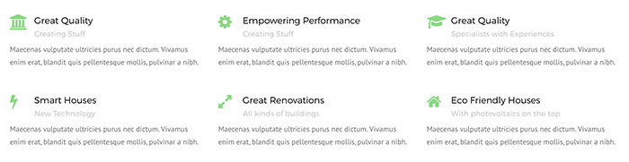
- Style 1: icon is displayed on top, inside a circle. Title, subtitle and text are displayed beneath the icon, aligned to center.
- Step 5: Click "Save Changes" and Icon element will appear inside your Backend Editor as seen on the image below.
Quote element
Quote element is meant for displaying quotes. It consists of quote icon and quote text.
Quote color depends on Primary Color which is set inside Theme Options -> Style Settings -> Theme Style.
How to Add Quote element in VC:
- Step 1: Go to "Backend Editor"
- Step 2: Click on the "+" icon to add new element
- Step 3: New window pops up. Select "Quote" element from the list
- Step 4: New window pops up. Here you can specify settings for Quote element.

You can define:
- Quote Text: insert your quote text
- Quote Style: can be either set to Style-1 or Style-2
- Step 5: Click "Save Changes" and Quote element will appear inside your Backend Editor as seen on the image below.
Google Maps element
Google Maps element displays specified location and description in Google Maps. You can also upload custom pin.
How to Add Google Maps element in VC:
- Step 1: Go to "Backend Editor"
- Step 2: Click on the "+" icon to add new element
- Step 3: New window pops up. Select "Google Maps" element from the list
- Step 4: New window pops up. Here you can specify settings for Google Maps element.
You can define:
- Zoom: at low zoom levels, a small set of map tiles covers a wide area; at higher zoom levels, the tiles are of higher resolution and cover a smaller area.
- Map Type: you can select between next map types: road map, satellite, hybrid, terrain
- Height: height must be in px (you can also leave this field empty)
- Disable scrolling: disable scrolling and dragging (mobile)
- Step 5: Click "Save Changes" and Google Maps element will appear inside your Backend Editor as seen on the image below.
After you have create Google Maps element in VC you should add Google Maps Item by clicking the "+" icon inside Google Maps element field in VC.
New window appears.
You can define:
- Location: specify location to be displayed in Google Maps
- Show marker at center: center google maps on this location
- Pin: upload a custom pin
- Info: insert some description about the location (it will be shown in tooltip when hovered over the pin).
Social Icons element
Social Icons element is used for displaying social icons that can be linked to your social network page.
How to Add Social Icons element in VC:
- Step 1: Go to "Backend Editor"
- Step 2: Click on the "+" icon to add new element
- Step 3: New window pops up. Select "Social Icons" element from the list
- Step 4: Click on the "+" icon inside Social Icons element you just created.
- Step 5: New window appears. Here you can specify settings for Social icon item
You can define:
- URL: insert link to your social network page here
- Social Network: select a social network from the list
- Target: append attribute value to link (_blank, _self, _parent, _top). Read more about these values here.

Contact Info element
Contact Info element is used for organized contact information. It consists of an icon and text next to it.
How to Add Contact Info element in VC:
- Step 1: Go to "Backend Editor"
- Step 2: Click on the "+" icon to add new element
- Step 3: New window pops up. Select "Contact info" element from the list
- Step 4: Click on the "+" icon inside Contact Info element you just created.
- Step 5: New window appears. Here you can specify settings for Contact Info item
You can define:
- Text: insert text that will be displayed next to icon
- Url insert url for text.
- Icon: select icon from the list
FAQ element
FAQ element is used for displaying frequently asked questions in organized manner (with accordion).
How to Add FAQ element in VC:
- Step 1: Go to "Backend Editor"
- Step 2: Click on the "+" icon to add new element
- Step 3: New window pops up. Select "FAQ" element from the list
- Step 4: New window pops up. Here you can specify settings for FAQ element.
You can define:
- FAQ question title: displays question.
- FAQ answer title: displays answer title (visible when user clicks on the question)
- FAQ answer content: displays answer content (below the answer title, visible when user clicks on the question)
- Step 5: Click "Save Changes" and FAQ element will appear inside your Backend Editor as seen on the image below.
Logo element
Logo element is used for displaying logos.
How to Add Logo element in VC:
- Step 1: Go to "Backend Editor"
- Step 2: Click on the "+" icon to add new element
- Step 3: New window pops up. Select "Logo" element from the list
- Step 4:Click on the "+" icon inside Logo element you just created.
- Step 5: New window pops up. Here you can specify settings for Logo element.
You can define:
- Logo URL: Logo image from URL
- Image: upload Logo image
- Url: specify link for the logo image (when clicked it will go connect to that link)
- Alt: set alternative text for logo image (good for SEO).
- Step 5: Click "Save Changes" and Logo element will appear inside your Backend Editor as seen on the image below.
Testimonials element
Testimonials element is used for displaying testimonials of users, customers, clients etc.
How to Add Testimonials element in VC:
- Step 1: Go to "Backend Editor"
- Step 2: Click on the "+" icon to add new element
- Step 3: New window pops up. Select "Testimonials" element from the list
- Step 4:Click on the "+" icon inside Testimonial element you just created.
- Step 5: Click "Save Changes" and Testimonials element will appear inside your Backend Editor as seen on the image below.
After you have created the element in VC you should add Testimonial Items into the Testimonials element by clicking the "+" icon inside Testimonials element field in VC.
- Testimonial text: insert testimonials text
- User name: insert name of the user saying the testimonial
- Rating: you can select 1-5 rating from drop down.
- User image: upload user image
- User image URL: upload user image via URL
Button element
Button element is used for displaying buttons.
How to Add Button element in VC:
- Step 1: Go to "Backend Editor"
- Step 2: Click on the "+" icon to add new element
- Step 3: New window pops up. Select "Button" element from the list
- Step 4:Click on the "+" icon inside Button element you just created.
- Step 5: New window pops up. Here you can specify settings for Button element.
You can define:
- Text: displays text inside button
- Link: when clicked link to specific URL
- Target: append attribute value to link (_blank, _self, _parent, _top). Read more about these values here.
- Size: select size of the button
- Small: button will be displayed in small size
- Medium: button will be displayed in medium size
- Large: button will be displayed in large size
- Style: you can see and change Button Styles inside "Theme Options -> Style Settings -> Theme Style".
- Color: specify text color on button
- Background: specify background color on button
- Icon: select icon from the list, this will add icon next to the text
- Step 5: Click "Save Changes" and Button element will appear inside your Backend Editor as seen on the image below.

List element
List element is used for lists.
How to Add Pricing table element in VC:
- Step 1: Go to "Backend Editor"
- Step 2: Click on the "+" icon to add new element
- Step 3: New window pops up. Select "Pricing table" element from the list
- Step 4:Click on the "+" icon inside Pricing table element you just created.
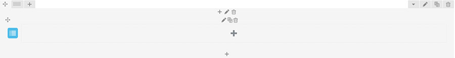 - Step 5: New window pops up. Here you can specify settings for Pricing table element.
You can define:
- List icon: indicating a list item
Insert List Item by clicking on the "+" icon inside List element in VC.
New window pops up. Here you can
You can define:
- Text: insert content of the list item, it will appear inside List element
After that you should see List item inside your List element in VC.
Accordion element
Accordion element is used for neatly displaying information that is neatly organizied in different Accordion Items that toggles (open for more information) when the user clicks on it.
How to Add Accordion element in VC:
- Step 1: Go to "Backend Editor"
- Step 2: Click on the "+" icon to add new element
- Step 3: New window pops up. Select "Accordion" element from the list
- Step 4:Click on the "+" icon inside Accordion element you just created.
- Step 5: New window pops up. Here you can specify settings for Accordion element.
You can define:
- Opened:
- No: make all Accordion Items closed
- Yes: make all Accordion Items opened
- Style: specify Accordion style
Insert Accordion Item by clicking on the "+" icon inside Accordion element in VC.
New window pops up. Here you can
You can define:
- Title: insert title of the Accordion Item, that will appear inside Accordion element
After that you should see List item inside your Accordion element in VC.
Build Accordion Items content by adding other Visual Composer elements inside the Accordion Item, in our example we added a heading element and beneath it a text block element.
Error 404 element
Error 404 element is used for neatly displaying information that is neatly organizied in different Accordion Items that toggles (open for more information) when the user clicks on it.
How to Add Error 404 element in VC:
- Step 1: Go to "Backend Editor"
- Step 2: Click on the "+" icon to add new element
- Step 3: New window pops up. Select "Error 404" element from the list
- Step 4: New window pops up. Here you can specify settings for Error 404 element.
You can define:
- Title: specify the title
- Subtitle: specify the subtitle
- Image: to be displayed on error 404 page.
- Step 5: Click "Save Changes" when done customizing the settings and Error 404 element will display in VC.
After that you should see Error 404 element added.
Table element
Table element is used for creating and displaying tables.
How to Add Table element in VC:
- Step 1: Go to "Backend Editor"
- Step 2: Click on the "+" icon to add new element
- Step 3: New window pops up. Select "Table" element from the list
- Step 4: New window pops up. Here you can specify settings for Table element.
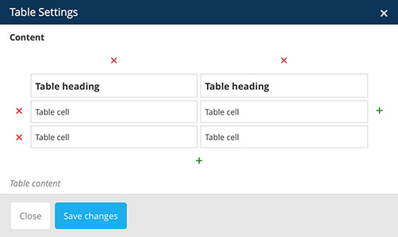
You can define:
- + signs: create new row or column
- x signs: delete row or column
- Table Heading: heading displayed in table header (the first row in columns)
- Table Cell: insert table cell content
- Step 5: Click "Save Changes" when done customizing the settings and Table element will display in VC.
After that you should see Table element added in VC
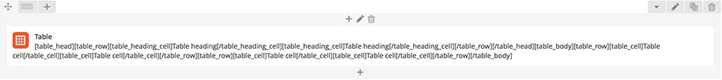Native Elements
You can choose from a wide variety of native elements in Visual Composer.
Official documentation about these elements can be found here.
Row element
Row element is used for placing content. Rows divide your page into the blocks of columns and columns hold different content items. Read more about Row Element here.
How to Add Row element in VC:
- Step 1: Go to "Backend Editor"
- Step 2: Click on the "+" icon to add new element
- Step 3: New window pops up. Select "Row" element from the list
- Step 4: After that you should see Row element added in VC
- Step 5: Click on the "pencil" icon to open Column Settings.
- Step 6: You can specify new extra class to this column and edit it in Custom CSS
- Step 7: Under Design Options and Responsive Options you can define paddings, margins, border and other options.
Official guide about using Row element can be found here.
Icon element
Icon element is meant for displaying icons.
How to Add Icon element in VC:
- Step 1: Go to "Backend Editor"
- Step 2: Click on the "+" icon to add new element
- Step 3: New window pops up. Select "Icon" element from the list
- Step 4: New window pops up. Here you can specify settings for Icon element.
You can define:
- Icon library: choose from different Icon sets. You can see the preview of an icon below and by clicking on the arrow all the icons appear.
- FontAwesome: you can see their icons listed here.
- Open Iconic: you can see their icons listed here.
- Typicons: you can see their icons listed here.
- Entypo: you can see their icons listed here.
- Lineicons: you can see their icons listed here.
- Icon color: choose icon color. At the bottom of the list you can select Custom Color.
- Background shape: choose background shape
- Background color: if background shape is selected, you can choose color of the icon background
- Size: choose Icon size
- Icon Alignment: can be eaither set to left, right and center
- URL: link Icon to URL
- CSS animation: Select type of animation for element to be animated when it "enters" the browsers viewport (Note: works only in modern browsers).
- Extra class name: by entering class name you can edit this icon entirely by yourself with Cusom CSS
- Step 5: Click "Save Changes" when done customizing the settings and Icon element will display in VC.
After that you should see Icon element added in VC
For more information please refer to Visual Composer help page: https://wpbakery.atlassian.net/wiki/display/VC/Visual+Composer+Pagebuilder+for+WordPress
Separator element
Separator element is meant for neatly organizing your page. It creates a line that divides two different sections.
How to Add Separator element in VC:
- Step 1: Go to "Backend Editor"
- Step 2: Click on the "+" icon to add new element
- Step 3: New window pops up. Select "Separator" element from the list
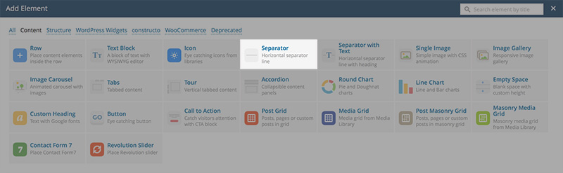 - Step 4: New window pops up. Here you can specify settings for Icon element.
You can define:
- Color: choose a color of a seperator. At the bottom of the list you can select Custom Color.
- Alignment: choose icon color. At the bottom of the list you can select Custom Color.
- Style: choose background shape
- Border:
- Dashed:
- Dotted:
- Double:
- Border width: specify the width of the border (higher the width the bigger the separator)
- Element width: choose element width (100 percent means that the separator will span through entire column)
- Extra class name: by entering class name you can edit this icon entirely by yourself with Cusom CSS
- Step 5: Click "Save Changes" when done customizing the settings and Separator element will display in VC.
After that you should see Separator element added in VC
For more information please refer to Visual Composer help page: https://wpbakery.atlassian.net/wiki/display/VC/Visual+Composer+Pagebuilder+for+WordPress
Separator with Text element
Separator with text element is meant for neatly organizing your page. It consists of a title and a separator line.
How to Add Separator with text element in VC:
- Step 1: Go to "Backend Editor"
- Step 2: Click on the "+" icon to add new element
- Step 3: New window pops up. Select "Separator with text" element from the list
- Step 4: New window pops up. Here you can specify settings for Separator with text element.
You can define:
- Title: insert a title to be displayed inside the separator
- Title position: choose title position it can be either set to center, left or right
- Separator alignment: choose separator alignment it can be either set to left, center or right
- Color: choose a color of a seperator. At the bottom of the list you can select Custom Color
- Style: choose background shape
- Border:
- Dashed:
- Dotted:
- Double:
- Border width: specify the width of the border (higher the width the bigger the separator)
- Element width: choose element width (100 percent means that the separator will span through entire column)
- Extra class name: by entering class name you can edit this icon entirely by yourself with Cusom CSS
- Step 5: Click "Save Changes" when done customizing the settings and Separator with text element will display in VC.
After that you should see Separator with text element added in VC
For more information please refer to Visual Composer help page: https://wpbakery.atlassian.net/wiki/display/VC/Visual+Composer+Pagebuilder+for+WordPress
Single image element
Single image element is meant for displaying images.
How to Add Single image element in VC:
- Step 1: Go to "Backend Editor"
- Step 2: Click on the "+" icon to add new element
- Step 3: New window pops up. Select "Single image" element from the list
- Step 4: New window pops up. Here you can specify settings for Single image element.
You can define:
- Widget title: enter text used as widget title (Note: located above content element).
- Image: select image from Media Library
- Title position: choose title position it can be either set to center, left or right
- Image size: enter image size (Example: "thumbnail", "medium", "large", "full" or other sizes defined by theme). Alternatively enter size in pixels (Example: 200x100 (Width x Height)). Leave parameter empty to use "thumbnail" by default.
- Image alignment: can be either set to left, center or right
- Image style: specify how the image should be displayed
- Border width: specify the width of the border (higher the width the bigger the separator)
- Link to large image: if checked, image will link to the larger image.
- Image link: enter URL if you want this image to have a link (Note: parameters like "mailto:" are also accepted).
- CSS animation: select type of animation for element to be animated when it "enters" the browsers viewport (Note: works only in modern browsers).
- Extra class name: by entering class name you can edit this icon entirely by yourself with Cusom CSS
- Step 5: Click "Save Changes" when done customizing the settings and Single image element will display in VC.
After that you should see Single image element added in VC
For more information please refer to Visual Composer help page: https://wpbakery.atlassian.net/wiki/display/VC/Visual+Composer+Pagebuilder+for+WordPress
Image Gallery element
Image Gallery element is meant for displaying images.
How to Add Image Gallery element in VC:
- Step 1: Go to "Backend Editor"
- Step 2: Click on the "+" icon to add new element
- Step 3: New window pops up. Select "Image Gallery" element from the list
- Step 4: New window pops up. Here you can specify settings for Image Gallery element.
You can define:
- Widget title: enter text used as widget title (Note: located above content element).
- Image: select image from Media Library
- Title position: choose title position it can be either set to center, left or right
- Image size: enter image size (Example: "thumbnail", "medium", "large", "full" or other sizes defined by theme). Alternatively enter size in pixels (Example: 200x100 (Width x Height)). Leave parameter empty to use "thumbnail" by default.
- Image alignment: can be either set to left, center or right
- Image style: specify how the image should be displayed
- Border width: specify the width of the border (higher the width the bigger the separator)
- Link to large image: if checked, image will link to the larger image.
- Image link: enter URL if you want this image to have a link (Note: parameters like "mailto:" are also accepted).
- CSS animation: select type of animation for element to be animated when it "enters" the browsers viewport (Note: works only in modern browsers).
- Extra class name: by entering class name you can edit this icon entirely by yourself with Cusom CSS
- Step 5: Click "Save Changes" when done customizing the settings and Image Gallery element will display in VC.
After that you should see Image Gallery element added in VC
For more information please refer to Visual Composer help page: https://wpbakery.atlassian.net/wiki/display/VC/Visual+Composer+Pagebuilder+for+WordPress
Image Carousel element
Image Carousel element is meant for displaying images.
How to Add Image Carousel element in VC:
- Step 1: Go to "Backend Editor"
- Step 2: Click on the "+" icon to add new element
- Step 3: New window pops up. Select "Image Carousel" element from the list
- Step 4: New window pops up. Here you can specify settings for Image Carousel element.
You can define:
- Widget title: enter text used as widget title (Note: located above content element).
- Images: select images from Media Library
- Carousel size: enter image size. Example: thumbnail, medium, large, full or other sizes defined by current theme. Alternatively enter image size in pixels: 200x100 (Width x Height). Leave empty to use "thumbnail" size. If used slides per view, this will be used to define carousel wrapper size.
- On click action: select action for click event.
- Slider orientation: select slider position (Note: this affects swiping orientation).
- Slider speed: duration of animation between slides (in ms).
- Slides per view: enter number of slides to display at the same time. )
- Slider autoplay: enable autoplay mode
- Hide pagination control: enter URL if you want this image to have a link (Note: parameters like "mailto:" are also accepted).
- Hide prev/next buttons: select type of animation for element to be animated when it "enters" the browsers viewport (Note: works only in modern browsers).
- Partial view:
- Slider loop:
- Extra class name: by entering class name you can edit this icon entirely by yourself with Cusom CSS
- Step 5: Click "Save Changes" when done customizing the settings and Image Carousel element will display in VC.
After that you should see Image Carousel element added in VC
For more information please refer to Visual Composer help page: https://wpbakery.atlassian.net/wiki/display/VC/Visual+Composer+Pagebuilder+for+WordPress
Tabs element
Tabs element is meant for displaying content inside tabs section.
How to Add Tabs element in VC:
- Step 1: Go to "Backend Editor"
- Step 2: Click on the "+" icon to add new element
- Step 3: New window pops up. Select "Tabs" element from the list
- Step 4: New window pops up. Here you can specify settings for Tabs element.
You can define:
- Widget title: enter text used as widget title (Note: located above content element).
- Style: AnpsThemes is style for our themes
- Shape: choose title position it can be either set to center, left or right
- Color: specify color for tabs
- Do not fill content area:
- Spacing: Select tabs spacing.
- Gap: Select tabs gap.
- Position: Select tabs navigation position.
- Alignment: Select tabs section title alignment.
- Autoplay: Select auto rotate for tabs in seconds (Note: disabled by default).
- Active section: Enter active section number (Note: to have all sections closed on initial load enter non-existing number).
- Pagination style: Select pagination style.
- Extra class name: by entering class name you can edit this icon entirely by yourself with Cusom CSS
- Type: defines how the tabs will be position. It can be set to vertically or horizontally.
- Step 5: Click "Save Changes" when done customizing the settings and Tabs element will display in VC.
After that you should see Tabs element added in VC
Add new tabs by clicking on the "+" icon inside Tabs Element section.
New window appears.
You can define:
- Title: insert the tab title
- Section ID: enter section ID
- Add icon: checking this option will allow you to add an icon before or after the tab section title
- Extra class name: by entering class name you can edit this icon entirely by yourself with Cusom CSS
Add Tabs items by clicking on the big "+" icon inside Tabs element.
New window appears. Add elements and set their settings. On the image below you can see Tabs element with various VC elements inside.
For more information please refer to Visual Composer help page: https://wpbakery.atlassian.net/wiki/display/VC/Visual+Composer+Pagebuilder+for+WordPress
Tour element
Tour element is meant for displaying vertical tabbed content.
How to Add Tabs element in VC:
- Step 1: Go to "Backend Editor"
- Step 2: Click on the "+" icon to add new element
- Step 3: New window pops up. Select "Tabs" element from the list
- Step 4: New window pops up. Here you can specify settings for Tabs element.
You can define:
- Widget title: enter text used as widget title (Note: located above content element).
- Style: AnpsThemes is style for our themes
- Shape: choose title position it can be either set to center, left or right
- Color: specify color for tabs
- Do not fill content area:
- Spacing: Select tabs spacing.
- Gap: Select tabs gap.
- Position: Select tabs navigation position.
- Alignment: Select tabs section title alignment.
- Autoplay: Select auto rotate for tabs in seconds (Note: disabled by default).
- Active section: Enter active section number (Note: to have all sections closed on initial load enter non-existing number).
- Pagination style: Select pagination style.
- Extra class name: by entering class name you can edit this icon entirely by yourself with Cusom CSS
- Type: defines how the tabs will be position. It can be set to vertically or horizontally.
- Step 5: Click "Save Changes" when done customizing the settings and Tabs element will display in VC.
After that you should see Tabs element added in VC
Add new tabs by clicking on the "+" icon inside Tabs Element section.
New window appears.
You can define:
- Title: insert the tab title
- Section ID: enter section ID
- Add icon: checking this option will allow you to add an icon before or after the tab section title
- Extra class name: by entering class name you can edit this icon entirely by yourself with Cusom CSS
Add Tabs items by clicking on the big "+" icon inside Tabs element.
New window appears. Add elements and set their settings. On the image below you can see Tabs element with various VC elements inside.
For more information please refer to Visual Composer help page: https://wpbakery.atlassian.net/wiki/display/VC/Visual+Composer+Pagebuilder+for+WordPress
Accordion element
Accordion element is meant for displaying vertical tabbed content.
How to Add Accordion element in VC:
- Step 1: Go to "Backend Editor"
- Step 2: Click on the "+" icon to add new element
- Step 3: New window pops up. Select "Accordion" element from the list
- Step 4: New window pops up. Here you can specify settings for Accordion element.
You can define:
- Widget title: enter text used as widget title (Note: located above content element).
- Style: AnpsThemes is style for our themes
- Shape: choose title position it can be either set to center, left or right
- Color: specify color for tabs
- Do not fill content area:
- Spacing: Select tabs spacing.
- Gap: Select tabs gap.
- Position: Select tabs navigation position.
- Alignment: Select tabs section title alignment.
- Autoplay: Select auto rotate for tabs in seconds (Note: disabled by default).
- Active section: Enter active section number (Note: to have all sections closed on initial load enter non-existing number).
- Pagination style: Select pagination style.
- Extra class name: by entering class name you can edit this icon entirely by yourself with Cusom CSS
- Type: defines how the tabs will be position. It can be set to vertically or horizontally.
- Step 5: Click "Save Changes" when done customizing the settings and Accordion element will display in VC.
After that you should see Accordion element added in VC
Add new tabs by clicking on the "+" icon inside Accordion Element section.
New window appears.
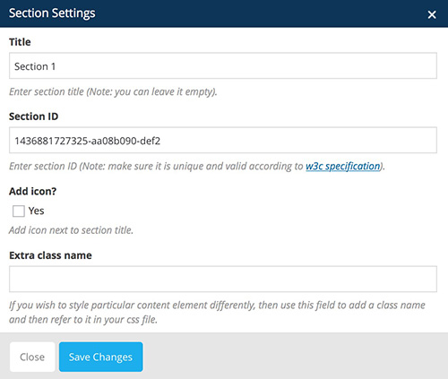You can define:
- Title: insert the tab title
- Section ID: enter section ID
- Add icon: checking this option will allow you to add an icon before or after the tab section title
- Extra class name: by entering class name you can edit this icon entirely by yourself with Cusom CSS
Add Accordion items by clicking on the big "+" icon inside Accordion element.
New window appears. Add elements and set their settings. On the image below you can see Accordion element with various VC elements inside.
For more information please refer to Visual Composer help page: https://wpbakery.atlassian.net/wiki/display/VC/Visual+Composer+Pagebuilder+for+WordPress
Round Chart element
Round Chart element is meant for displaying charts in a rounded fashion.
How to Add Round Chart element in VC:
- Step 1: Go to "Backend Editor"
- Step 2: Click on the "+" icon to add new element
- Step 3: New window pops up. Select "Round Chart" element from the list
- Step 4: New window pops up. Here you can specify settings for Round Chart element.
You can define:
- Widget title: enter text used as widget title (Note: located above content element).
- Design: select round chart design
- Pie:
- Doughnut:
- Style: select round chart style
- Flat:
- Modern:
- Custom:
- Gap: specify gap size (the bigger the number, bigger the gap)
- Outline color: select gap color
- Show legend: if checked, chart will have legend.
- Show hover values: if checked, chart will show values on hover.
- Values: add areas to the chart. By clicking on the arrow icon new menu appears:
- Title: insert area title (i.e. Industrial)
- Value: insert area value (i.e. 60) this means 60 percent
- Color: select area color (i.e. blue)
- Animation: specify type of animation
- Extra class name: by entering class name you can edit this icon entirely by yourself with Cusom CSS
By clicking on the "+" icon you can add new areas to the chart.
- Step 5: Click "Save Changes" when done customizing the settings and Round Chart element will display in VC.
After that you should see Round Chart element added in VC
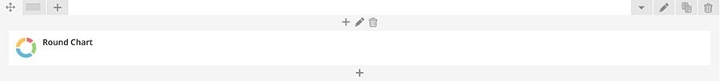Line Chart element
Line Chart element is meant for displaying charts in a line fashion.
How to Add Line Chart element in VC:
- Step 1: Go to "Backend Editor"
- Step 2: Click on the "+" icon to add new element
- Step 3: New window pops up. Select "Line Chart" element from the list
- Step 4: New window pops up. Here you can specify settings for Line Chart element.
You can define:
- Widget title: enter text used as widget title (Note: located above content element).
- Design: select round chart design
- Line:

- Bar:
- Style: select round chart style
- Flat:
- Modern:
- Custom:
- Show legend: if checked, chart will have legend.
- Show hover values: if checked, chart will show values on hover.
- X-axis values: enter values for axis (Note: separate values with ";").
- Values: add areas to the chart. By clicking on the arrow icon new menu appears:
- Title: insert area title (i.e. Industrial)
- Value: insert area value (i.e. 60) this means 60 percent
- Color: select area color (i.e. blue)
- Animation: specify type of animation
- Extra class name: by entering class name you can edit this icon entirely by yourself with Cusom CSS
By clicking on the "+" icon you can add new areas to the chart.
- Step 5: Click "Save Changes" when done customizing the settings and Line Chart element will display in VC.
After that you should see Line Chart element added in VC
Empty Space element
Empty Space element is meant for displaying empty space. This is useful for some padding purposes.
How to add Empty Space element in VC:
- Step 1: Go to "Backend Editor"
- Step 2: Click on the "+" icon to add new element
- Step 3: New window pops up. Select "Empty Space" element from the list
- Step 4: New window pops up. Here you can specify settings for Line Chart element.
You can define:
- Height: specify the height of the empty space
- Extra class name: by entering class name you can edit this icon entirely by yourself with Cusom CSS
- Step 5: Click "Save Changes" when done customizing the settings and Empty Space element will display in VC.
After that you should see Empty Space element added in VC
Post Grid element
Post Grid element is meant for displaying blog posts in a grid.
How to add Post Grid element in VC:
- Step 1: Go to "Backend Editor"
- Step 2: Click on the "+" icon to add new element
- Step 3: New window pops up. Select "Post Grid" element from the list
- Step 4: New window pops up. Here you can specify settings for Post Grid element.
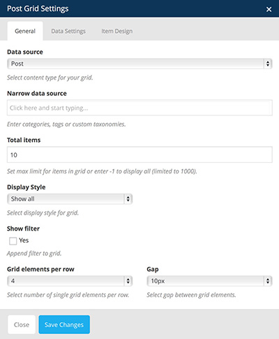
You can define:
- Data source: select content type for your grid.
- Narrow data source: if you want to display only specific posts you can specify them by entering categories, tags or custom taxonomies.
- Total items: set max limit for items in grid or enter -1 to display all (limited to 1000)
- Display style: select display style for grid
- Show filter: checking this box will display filter
- Grid elements per row: select number of blog posts in grid per row.
- Gap: select gap between grid elements.
- Step 5: Click "Save Changes" when done customizing the settings and Post Grid element will display in VC.
After that you should see Post Grid element added in VC

For more information please refer to Visual Composer help page: https://wpbakery.atlassian.net/wiki/display/VC/Visual+Composer+Pagebuilder+for+WordPress
Media Grid element
Media Grid element is meant for displaying Media in a grid.
How to add Media Grid element in VC:
- Step 1: Go to "Backend Editor"
- Step 2: Click on the "+" icon to add new element
- Step 3: New window pops up. Select "Media Grid" element from the list
- Step 4: New window pops up. Here you can specify settings for Media Grid element.
You can define:
- Images: select images from media library
- Display style: select display style for grid
- Grid elements per row: select number of blog posts in grid per row
- Gap: select gap between grid elements.
- Step 5: Click "Save Changes" when done customizing the settings and Media Grid element will display in VC.
After that you should see Media Grid element added in VC
For more information please refer to Visual Composer help page: https://wpbakery.atlassian.net/wiki/display/VC/Visual+Composer+Pagebuilder+for+WordPress
Post Masonry Grid element
Post Masonry Grid element is meant for displaying blog posts in a masonry grid.
How to add Post Masonry Grid element in VC:
- Step 1: Go to "Backend Editor"
- Step 2: Click on the "+" icon to add new element
- Step 3: New window pops up. Select "Post Masonry Grid" element from the list
- Step 4: New window pops up. Here you can specify settings for Post Masonry Grid element.
You can define:
- Data source: select content type for your grid.
- Narrow data source: if you want to display only specific posts you can specify them by entering categories, tags or custom taxonomies.
- Total items: set max limit for items in grid or enter -1 to display all (limited to 1000)
- Display style: select display style for grid
- Show filter: checking this box will display filter
- Grid elements per row: select number of blog posts in grid per row.
- Gap: select gap between grid elements.
- Step 5: Click "Save Changes" when done customizing the settings and Post Masonry Grid element will display in VC.
After that you should see Post Masonry Grid element added in VC
For more information please refer to Visual Composer help page: https://wpbakery.atlassian.net/wiki/display/VC/Visual+Composer+Pagebuilder+for+WordPress
Masonry Media Grid element
Masonry Media Grid element is meant for displaying media in a masonry grid.
How to add Masonry Media Grid element in VC:
- Step 1: Go to "Backend Editor"
- Step 2: Click on the "+" icon to add new element
- Step 3: New window pops up. Select "Masonry Media Grid" element from the list
- Step 4: New window pops up. Here you can specify settings for Masonry Media Grid element.
You can define:
- Data source: select content type for your grid.
- Narrow data source: if you want to display only specific posts you can specify them by entering categories, tags or custom taxonomies.
- Total items: set max limit for items in grid or enter -1 to display all (limited to 1000)
- Display style: select display style for grid
- Show filter: checking this box will display filter
- Grid elements per row: select number of blog posts in grid per row.
- Gap: select gap between grid elements.
- Step 5: Click "Save Changes" when done customizing the settings and Masonry Media Grid element will display in VC.
After that you should see Masonry Media Grid element added in VC
For more information please refer to Visual Composer help page: https://wpbakery.atlassian.net/wiki/display/VC/Visual+Composer+Pagebuilder+for+WordPress
Contact Form 7 element
Contact Form 7 element is meant for displaying contact form.
How to add Contact Form 7 element in VC:
- Step 1: Go to "Backend Editor"
- Step 2: Click on the "+" icon to add new element
- Step 3: New window pops up. Select "Contact Form 7" element from the list
- Step 4: New window pops up. Here you can specify settings for Contact Form 7 element.
You can define:
- Form title: this text will be displayed above the contact form
- Select contact form: choose previously created contact form from the drop down list. We advise you to select our contact form
- Step 5: Click "Save Changes" when done customizing the settings and Contact Form 7 element will display in VC.
After that you should see Contact Form 7 element added in VC
For more information please refer to Visual Composer help page: https://wpbakery.atlassian.net/wiki/display/VC/Visual+Composer+Pagebuilder+for+WordPress
Revolution Slider element
Revolution Slider element is meant for displaying a Revolution Slider.
How to add Revolution Slider element in VC:
- Step 1: Go to "Backend Editor"
- Step 2: Click on the "+" icon to add new element
- Step 3: New window pops up. Select "Revolution Slider" element from the list
- Step 4: New window pops up. Here you can specify settings for Revolution Slider element.

You can define:
- Form title: this text will be displayed above the contact form
- Select contact form: choose previously created contact form from the drop down list. We advise you to select our contact form
- Step 5: Click "Save Changes" when done customizing the settings and Revolution Slider element will display in VC.
After that you should see Revolution Slider element added in VC
For more information please refer to Visual Composer help page: https://wpbakery.atlassian.net/wiki/display/VC/Visual+Composer+Pagebuilder+for+WordPress
For more information please refer to Revolution Slider support here.
WooCommerce Elements
You can choose from a wide variety of WooCommerce elements in Visual Composer.
Official support and documentation for WooCommerce plugin is available here.
Cart element
Cart element is meant for displaying user added items of shopping cart.

How to add Cart element in VC:
- Step 1: Go to "Backend Editor"
- Step 2: Click on the "+" icon to add new element
- Step 3: New window pops up. Select "Cart" element from the list
After that you should see Cart element added in VC
Checkout element
Checkout element is meant for displaying checkout forms.
How to add Checkout element in VC:
- Step 1: Go to "Backend Editor"
- Step 2: Click on the "+" icon to add new element
- Step 3: New window pops up. Select "Checkout" element from the list
After that you should see Checkout element added in VC
Order Tracking Form element
Order Tracking Form element is meant for tracking ordered items.
How to add Order Tracking Form element in VC:
- Step 1: Go to "Backend Editor"
- Step 2: Click on the "+" icon to add new element
- Step 3: New window pops up. Select "Order Tracking Form" element from the list
After that you should see Order Tracking Form element added in VC
My Account element
My Account element is meant for displaying user account settings.
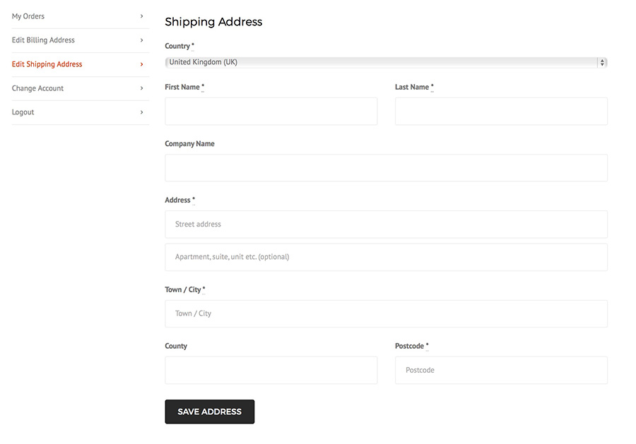How to add My Account element in VC:
- Step 1: Go to "Backend Editor"
- Step 2: Click on the "+" icon to add new element
- Step 3: New window pops up. Select "My Account" element from the list
- Step 4: New window pops up. Here you can specify settings for My Account element.
You can define:
- Order count: You can specify the number or order to show, it's set by default to 15
- Step 5: Click "Save Changes" when done customizing the settings and My Account element will display in VC.
After that you should see My Account element added in VC
Recent Products element
Recent Products element is meant for displaying your recently added products.
How to add Recent Products element in VC:
- Step 1: Go to "Backend Editor"
- Step 2: Click on the "+" icon to add new element
- Step 3: New window pops up. Select "Recent Products" element from the list
- Step 4: New window pops up. Here you can specify settings for Recent Products element.
You can define:
- Per Page: determines how many products to show on page
- Columns: determines how many columns wide the products should be before wrapping
- Order by: specify how the products should be ordered
- Order way: specify how the ordered should be layed out. You can either set it to ascending or descending
- Step 5: Click "Save Changes" when done customizing the settings and Recent Products element will display in VC.
After that you should see Recent Products element added in VC
Featured Products element
Featured Products element is meant for displaying products that are featured (labeled with star in the "Products" page).

Note: you should label a product as featured by going to "Products" and clicking on the Star icon in WP Admin Panel.How to add Featured Products element in VC:
- Step 1: Go to "Backend Editor"
- Step 2: Click on the "+" icon to add new element
- Step 3: New window pops up. Select "Featured Products" element from the list
- Step 4: New window pops up. Here you can specify settings for Featured Products element.
You can define:
- Per Page: determines how many products to show on page
- Columns: determines how many columns wide the products should be before wrapping
- Order by: specify how the products should be ordered
- Order way: specify how the ordered should be layed out. You can either set it to ascending or descending
- Step 5: Click "Save Changes" when done customizing the settings and Featured Products element will display in VC.
After that you should see Featured Products element added in VC
Product element
Product element is meant for displaying a single product item.
How to add Product element in VC:
- Step 1: Go to "Backend Editor"
- Step 2: Click on the "+" icon to add new element
- Step 3: New window pops up. Select "Product" element from the list
- Step 4: New window pops up. Here you can specify settings for Product element.
You can define:
- Select identificator: specify a product by entering its ID, SKU or title
- Step 5: Click "Save Changes" when done customizing the settings and Product element will display in VC.
After that you should see Product element added in VC
Products element
Products element is meant for displaying more products.
How to add Products element in VC:
- Step 1: Go to "Backend Editor"
- Step 2: Click on the "+" icon to add new element
- Step 3: New window pops up. Select "Products" element from the list
- Step 4: New window pops up. Here you can specify settings for Products element.
You can define:
- Columns: determines how many columns wide the products should be before wrapping
- Order by: specify how the products should be ordered
- Order way: specify how the ordered should be layed out. You can either set it to ascending or descending
- Products: specify a product by entering its ID, SKU or title
- Step 5: Click "Save Changes" when done customizing the settings and Products element will display in VC.
After that you should see Products element added in VC
Product Page element
Product Page element is meant for displaying more products.
How to add Add Product Page element in VC:
- Step 1: Go to "Backend Editor"
- Step 2: Click on the "+" icon to add new element
- Step 3: New window pops up. Select "Product Page" element from the list
- Step 4: New window pops up. Here you can specify settings for Product Page element.
You can define:
- Select identificator: specify a product by entering its ID, SKU or title
- Step 5: Click "Save Changes" when done customizing the settings and Product Page element will display in VC.
After that you should see Product Page element added in VC

Product Category element
Product Page element is meant for displaying products from a specific category.
How to add Add Product Category element in VC:
- Step 1: Go to "Backend Editor"
- Step 2: Click on the "+" icon to add new element
- Step 3: New window pops up. Select "Product Category" element from the list
- Step 4: New window pops up. Here you can specify settings for Product Category element.
You can define:
- Per Page: determines how many products to show on page
- Columns: determines how many columns wide the products should be before wrapping
- Order by: specify how the products should be ordered
- Order way: specify how the ordered should be layed out. You can either set it to ascending or descending
- Category: select a product category to display products from
- Step 5: Click "Save Changes" when done customizing the settings and Product Category element will display in VC.
After that you should see Product Category element added in VC
Product Categories element
Product Categories element is meant for displaying products from more specific categories.
How to add Add Product Categories element in VC:
- Step 1: Go to "Backend Editor"
- Step 2: Click on the "+" icon to add new element
- Step 3: New window pops up. Select "Product Categories" element from the list
- Step 4: New window pops up. Here you can specify settings for Product Categories element.
You can define:
- Number: The `number` field is used to display the number of products
- Order by: specify how the products should be ordered
- Order way: specify how the ordered should be layed out. You can either set it to ascending or descending
- Columns: determines how many columns wide the products should be before wrapping
- Categories: select categories to display products from
- Step 5: Click "Save Changes" when done customizing the settings and Product Categories element will display in VC.
After that you should see Product Categories element added in VC
Sale Products element
Sale Products element is meant for displaying products that are on sale.
How to add Add Sale Products element in VC:
- Step 1: Go to "Backend Editor"
- Step 2: Click on the "+" icon to add new element
- Step 3: New window pops up. Select "Sale Products" element from the list
- Step 4: New window pops up. Here you can specify settings for Sale Products element.
You can define:
- Per Page: determines how many products to show on page
- Columns: determines how many columns wide the products should be before wrapping
- Order by: specify how the products should be ordered
- Order way: specify how the ordered should be layed out. You can either set it to ascending or descending
- Categories: select categories to display products from
- Step 5: Click "Save Changes" when done customizing the settings and Sale Products element will display in VC.
After that you should see Sale Products element added in VC
Best Selling Products element
Best Selling Products element is meant for displaying products that are on sale.
How to add Add Best Selling Products element in VC:
- Step 1: Go to "Backend Editor"
- Step 2: Click on the "+" icon to add new element
- Step 3: New window pops up. Select "Best Selling Products" element from the list
- Step 4: New window pops up. Here you can specify settings for Best Selling Products element.
You can define:
- Per Page: determines how many products to show on page
- Columns: determines how many columns wide the products should be before wrapping
- Step 5: Click "Save Changes" when done customizing the settings and Best Selling Products element will display in VC.
After that you should see Best Selling Products element added in VC
Top Rated Products element
Top Rated Products element is meant for displaying top rated products.
How to add Add Top Rated Products element in VC:
- Step 1: Go to "Backend Editor"
- Step 2: Click on the "+" icon to add new element
- Step 3: New window pops up. Select "Top Rated Products" element from the list
- Step 4: New window pops up. Here you can specify settings for Top Rated Products element.

You can define:
- Per Page: determines how many products to show on page
- Columns: determines how many columns wide the products should be before wrapping
- Order by: specify how the products should be ordered
- Order way: specify how the ordered should be layed out. You can either set it to ascending or descending
- Step 5: Click "Save Changes" when done customizing the settings and Top Rated Products element will display in VC.
After that you should see Top Rated Products element added in VC
For more information please refer to Visual Composer help page: https://wpbakery.atlassian.net/wiki/display/VC/Visual+Composer+Pagebuilder+for+WordPress
Grid elements
If you want to have our button style. Than you need to add: style-1, style-2, style-3 or style-4 under extra class name

Adding Blog Posts
Adding Blog Posts with Wordpress
Here is a brief tutorial on how to create and publish new posts.
- Step 1: To add a post to your blog go to Posts → "Add New", at the right navigation menu in your Wordpress Admin Panel
- Step 2: Add a title of your post
- Step 3: Add content in the textarea below.
- Step 4: You can insert media content (images, videos) by clicking the "Add Media" button above the content textarea and below the title text field
- Step 5: You can choose to disable page heading or change page heading image and type of heading (i.e. fullscreen heading)
Note: this will override page heading settings set in Theme Options for this specific blog post.
- Step 6: Assign categories for this specific blog post in the panel "Categories" on the right.
- Step 7: Choose the featured image for blog post in the panel "Featured Images" on the right. Featured image is displayed above the excerpt post of the blog post.
- Step 8: Click on the publish button to publish the blog post.
You can insert special content elements such as headings, buttons, google maps etc. by clicking on shortcodes dropdown. To add a post to your blog go to Posts → "Add New", at the right navigation menu in your Wordpress Admin Panel add post heading, post content, add Featured image and assign the desired categories. See more details on adding posts.
Adding images
Images can be placed inside the content by clicking the "Add Media" button. New window appears where you can set additional options, such as title of an image, description etc. you can also set the image size from three predefined sizes (thumbnail, medium and large) and image alignment (left, center or right).
Adding a video to your Blog posts
Above the Featured image option (right side) on posts you can find the Featured Video option. You can add either the [youtube] or [vimeo] shortcodes to display the videos.
Read more about using these shortcodes here.
Adding a gallery of images to Blog posts
Above the Featured image option (right side) you can find the Gallery Images option.
This gallery images are displayed as a slider on the blog post page.
Adding Blog Posts with Visual Composer
- Step 1: To enable this feature go to "Settings" → "Visual Composer"
- Step 2: Check the "post" content type and click "Save Changes"
- Step 3: Click on the "Backend Editor" button on Blog Post Page inside WP admin panel (below the blog post title).
Inside VC Backend Editor you can easily drag-and-drop many of our custom elements (such as portfolio, team, recent blog, recent portfolio, quotes, icons, statements, accordions, testimonials, buttons, videos etc.)
On the image below you can see a custom blog page built with VC. Main Content is presented in a single column row and it consists of elements such as Single Image and Text Block. Text written below the image is caption.
Adding Portfolio Posts
Portfolio single item styles
There are two styles, that you can choose from in Theme Options.
- Portfolio Single Style 1 shows images normally in the left column and text in the right column.
- Portfolio Single Style 2 shows images in a carousel slider above the content.
Portfolio posts are meant for showcasing and describing your products, services, projects etc.
They are displayed in grid-like structure and when clicked more information about the project is revealed (goes to a portfolio item page).
- Sort Portfolio Posts by categories
- Portfolio Posts displayed in grid order. When hovered, title of portfolio appears and when clicked it takes you to the Portfolio Single Page.
- Portfolio Single Page is in this case using Portfolio Single Style 1.
- Step 1: Inside WP Admin Panel click on the "Portfolio" → "Add New".
- Step 2: Enter the Portfolio Item title
- Step 3: Insert the content in textarea below. You can insert shortcodes via in-built shortcode manager. Read more about shortcodes inside Shortcodes. You can also place content with Visual Composer Backend Editor. More on Visual Composer read here.
Note: enable Visual Composer backend editor by going to "Settings -> Visual Composer" and checking the portfolio option inside WP Admin panel. - Step 4: Enter a portfolio subtitle.
- Step 5: Define how the page heading will look like.
- Disable Page Heading: Check the box if you don't want to display the Page Heading.
- Page Heading Background: Upload an image for the background of the Page Heading.
- Full Screen Heading: Check the box if you want to have a full screen heading. If box is checked new options appear:
- Color top bar: Select a color for the top bar text color.
- Color menu, title and breadcrumbs: Select a color for the menu links, page heading title and breadcrumbs.
- Hover color: Select a color for hover states (when cursor is over the link).
- Logo: Choose a logo from the dropdown list. Upload a new Logo if needed by going to "Media -> Add New" in WP Admin Panel.
- Step 6: Assign categories for this specific portfolio post. This is applies to filtering purposes. (So that visitors can sort portfolio posts by category).
- Step 7: Add Gallery Images (on the right). Images added here will appear in the left column or above the content in the carousel. Depends on the set Portfolio Single Style which can be modified inside Theme Options -> General Settings -> Page Setup.
- Step 8: Add Featured Image (on the right). Added image will be displayed in Portfolio grid.
- Step 9: Click "Publish" or "Update".
This is an example of portfolio post page with Page Heading set to full screen and Portfolio Style set to Style one.
Sliders
Revolution slider
Our themes come included with Revolution Slider, which is one of best sliders available.
- Step 1: Install Revolution Slider by going to "Plugins" → "Revolution Slider" then click Install and Activate the plugin.
- Step 2: Go to "Revolution Slider" in the WP Admin Panel navigation.
- Step 3: Click on the "Create New Slider" or click on the link to modify an existing one.
- Step 4: Fill out the Main Slider Settings, such as the slider title, layout, height and width properties. Adjust visual effects in panels on the right side.
- Step 5: Go to the page you want your slider to be shown.
- Step 6: Go to Backend Editor with Visual Composer and add new element by clicking "+" icon and add element "Revolution Slider"
- Step 7: New window pops up. Choose desired slider setup from the menu.
- Step 8: After clicking "Save Changes" you should see Revolution Slider element added to the page.
You can also copy the shortcode that is automatically generated anywhere in the text editor (WP or Visual Composer).
- Step 1: Copy the code inside Main Slider Settings ("Revolution Slider" → "Add New Slider" or click on the link of existing one).
- Step 2: Paste the code anywhere in the text editor (WP built-in text editor or Visual Composer).
For more detailed information and support please refer to the official plugin website here.
Download slider dummy content: here
Widgets
You can add widget in Appearance → Widgets by drag and dropping in the Sidebar box.
Once you have added a widget to the Sidebar box the widget will open and extra fields will appear.
More information on widgets.
AnpsThemes - Download
You can add downloadable file. First title is widget title, than you can add file title and select file from dropdown list (all files from media library) or enter url to file (file external input field). You can also select icon from font awesome and color for icon and backgroud color, you can leave it empty and widget will take these colors from theme options.
AnpsThemes - Images
You can select any image from media library and shows it in any sidebar.
AnpsThemes - Menu
Double column menu display. Only one level menu supported.
AnpsThemes - Mini Cart
Widget without options. You can add woocommerce mini cart to any widget area. For example into above navigation sidebar.
AnpsThemes - Opening Time
In opening time widget you can set day (for example: Monday), time (for example: 10:00 - 18:00). You can also set if this day is exposed or not (automatically added new class). You also have + button to add new days.
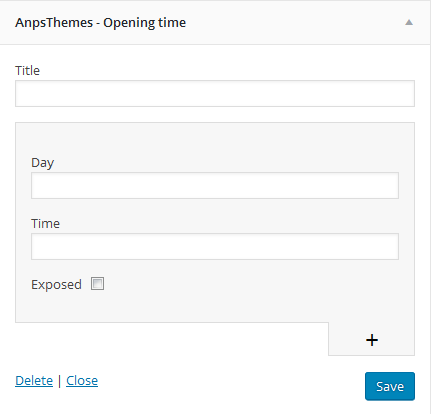
AnpsThemes - Recent News
Our widget recent news is a bit different than the native WordPress widget. The recent posts are styled differently and also display images from the posts.
AnpsThemes - Recent Projects
With recent projects widget you can show latest portfolio posts with images. Enter the title for recent projects and number of projects to be displayed.
AnpsThemes - Social icons
You can select between 4 styles: default, minimal, border and transparent border. You can also select icon and add url for this icon. Links can open as: self, blank, parent and top. You can add unlimited icons.
AnpsThemes - Spacing
With spacing widget you can add spacing between widgets in px.
AnpsThemes - Text and icon
You can also add link in text. Example: <a href="mailto:info@yourdomain.com">info@yourdomain.com</a>
Read more about WooCommerce widgets here.
Sidebars
Creating new Sidebar
- Step 1: Inside WP Admin Panel Go to "Appearance → Sidebars"
- Step 2: Click on the "+ Add Sidebar"
- Step 2: New window pops up. Insert Sidebar name.
- Step 4: Click on the "OK" button. You should see your sidebar now added to the table.
You can add widgets to newly created sidebars by going to "Appearance → Widgets".
Adding a sidebar to a page or post
You can add a sidebar to all pages, except the portfolio page and single item portfolio page. You can add a sidebar to a page/post by selecting the desired by going to the desired item in WordPress (under Pages/Posts) and under the content editor you will see a box called Sidebars. You can select eiter only one of the sidebars, either both of them.
Important: Be carefull when adding two sidebars, because some elements aren't designed to be used with two sidebars ( two or more column sidebars ).
Adding a Sidebar
Translating the Theme
Our theme comes localisation ready out of the box.
There are several methods to create a translation, most of which are outlined in the codex (http://codex.wordpress.org/Translating_WordPress), however, we find the easiest method is to use a plugin called Loco Translate.
Translating with Loco Translate Plugin
The Loco Translate plugin provides in-browser editing of PO files used for localizing WordPress plugins and themes. Free Loco Translate Download
After installing the Loco Translate plugin you should see a new section added to your WP Admin Panel navigation area.
This is a step-by-step guide to translate your Theme with Loco Translate Plugin.
Choosing the Language
- Step 1: To translate your Theme, select the desired theme from the "Themes" area by clicking on the "New Language" button.
To modify an existing translation click on the link of that specific language. - Step 2: Select a language in which you want to translate your Theme into. You can also specify language by inserting the language code into the text box located below.
- Then click Start Translating.
Translating
- Step 3: We need to Sync our Theme with Loco Translate.
Click on the "Sync" button to synchronize.
- After clicking on the "Sync" button you will see a wide list of words inside the "Source Text" area.
- Step 4: Choose the word or a string you would like to translate by clicking on them. You can also filter the strings by using the "Filter Translation" input box above the "Source Text" area.
- Step 5: Type the translated version of a word or a string inside the "Language Version" area below "Source Text" area.
- Step 6: When finished translating click on the Save button located on top of the "Source Text" area.
You can revert the modifications by clicking on the "Revert" button. Note: you can't revert the changes when you have already saved the file.
After clicking the "Save" button your Theme will automatically be updated with the newly added translations.
For more detailed information please refer to the official plugin website
Updating the Theme
Before you update
Everytime we update a theme you will be notified by email message. We suggesst that you keep Theme up to date, as we fix bugs and add improvements.
Caution: Always backup your files before upgrading.
How to update - Using FTP (prefered):
To update our theme, go to ThemeForest and download the newest version of our theme (you can check all of your purchased items under the Downloads tab).
- Step 1: Download the latest version from ThemeForest and unzip it
- Step 2: Log in to your server with FTP program and navigate to your wordpress installation -> wp-content -> themes
- Step 3: Delete (or just rename) your old Theme folder on server
- Step 4: Copy your new Theme folder to the server
Some of the FTP programs available for uploading files to server are FileZilla and SmartFTP.
Please note: our theme cannot be updated via WordPress, so if you are promted to update the theme, please do not click on the update, as you may lose your files.
How to update - Using Theme Options
Caution: Always backup your files before upgrading.
You can also update our theme by following the next steps:
- Step 1: Go to "Appearance -> Theme Options"
- Step 2: Inside Theme Options click on the "Upgrade Theme" inside the General Settings section.
- Step 3: Enter your ThemeForest username
- Step 4: Enter your ThemeForest API key (see Generate API key below)
Generate API key
To get your API key, log in to your themeforest account and click settings -> API Keys. Please see the screnshot below. If you do not have any generated API keys, please generate one.
Site Optimization
Slow website performance can be caused by different issues. Below are the 4 most common issues:
-
Plugins - Using multiple plugins on your site may effect your site performance. To quickly see if a plugin is slowing your site, disable all the plugins except for the ones that we included with our theme. If the site is running faster, then one of the plugins is the problem. To find out which one it is, activate one plugin at a time and test your site after each activation. If you find a plugin that is causing issues, please contact the plugin developer and report it to them.
-
Media Content - Images are the primary reason web pages are bloated and having unoptimized images can drastically slow down your site. Make sure not to upload larger images than you need to. Example: the image should not be larger then the column size in which the image is placed.
Also make sure the images are compressed/optimized. To do so, we recommend using an image editing tool like Photoshop and use the "Save For Web" feature to optimize images and reduce the overall file size.
-
W3 Total Cache - Using a caching plugin will definitely boost your site performance. We recommend using W3 Total Cache, because it has shown the most performance boosts on our themes. Check out this Tuts+ article. It starts by going over why using a caching plugin will help you and then dives into all the different options you need set, to make sure your site runs as fast as possible.
-
Hosting - Your site can only run as fast as your hosting allows it. This depends on which hosting provider and which hosting plan you have chosen. For example: using shared hosting can have an effect on speed. If you have not yet chosen a provider, please check forum and review sites to see which hosting will work best for you.
If you have tried all the performance tips and the site performance has not changed, we suggest you contact your host and discuss it with them.
Child Theme
A WordPress child theme is a theme that inherits the functionality of another theme, called the parent theme, and allows you to modify, or add to, the functionality of that parent theme. The whole idea of a child theme is that you can modify, and add to the functionality of that parent theme without modifying it directly. The parent remains intact, everything is built within the child theme.
Reasons to use child theme:
- Easy updates - If you’re using a child theme, you don’t have to worry about any updates. Whenever you update the theme, only the parent theme will be updated. Your child theme, and everything you’ve coded in it, remains intact.
- Changes - If you’re using a child theme, every modification can be found in the child theme’s folder and thus you can track all the changes you made very easily. To start using our child theme, then just activate the
Footer
Footer is great for presenting some additional information such as your contact information, sitemap, search field, social icons etc.
You can add these features to your Footer by following the next steps:
- Step 1: Go to "Appearance -> Widgets" inside your WP Admin Panel
- Step 2: Drag-and-Drop the Widgets on the left side to the desired Widget Area on the right side of the page.
In our case we added a Social Icons widget to the first column in Footer. You can read more about Widgets here.
You can also add them by clicking on the Widget and then selecting the Widget Area from the dropdown menu.
You can set up the footer in the same part as Widgets, Appearance → Widgets. The only difference is you don't drag and drop in the sidebar boxes, but you add them in Footer Widget Areas. In each column you can add what you like, as the widgets look different in the footer than in the sidebars.
Bootstrap
This theme has been built using Twitter Bootstrap. We did not use every aspect of it, but only include parts of it. For example, we have removed the default Glyphicons font icons and include Font Awesome instead.
If you want to use a feature of Bootstrap that we did not include, then go to assets/sass/bootstrap.scss and uncomment the import functions.
Many elements used in this theme are almost identical to Bootstrap components, so you check their documentation if you need extra help or check if they have extra functionality that is outside the scope of our theme.
Sources and Credits